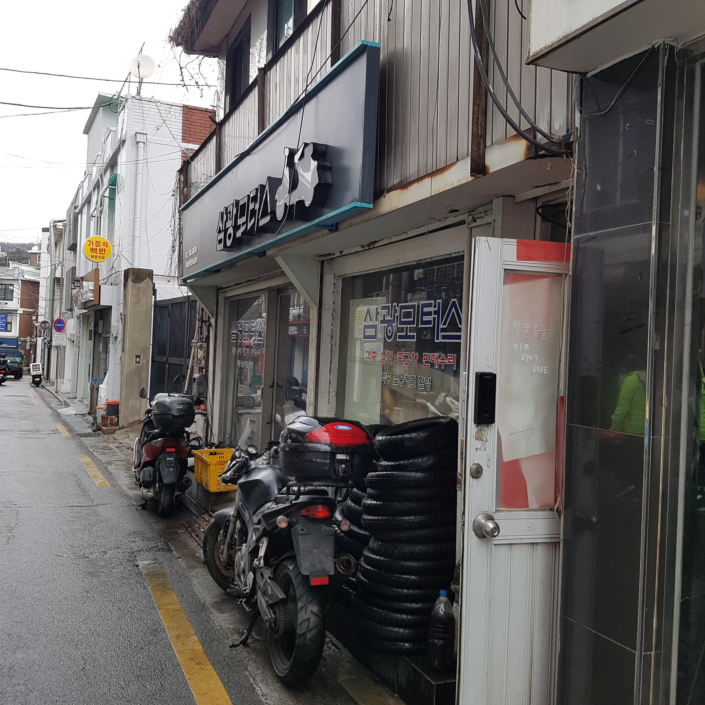
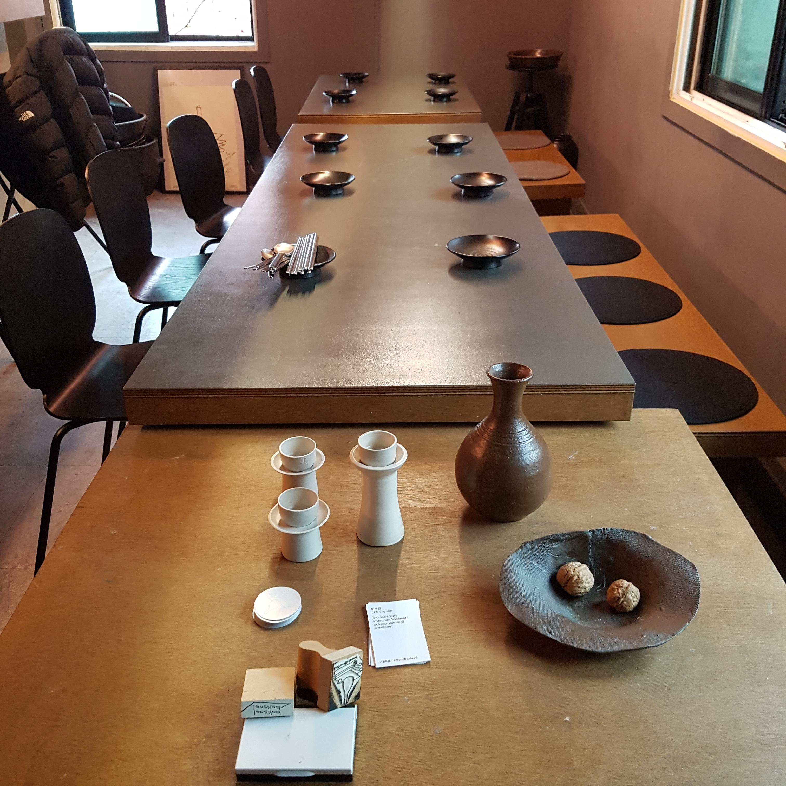
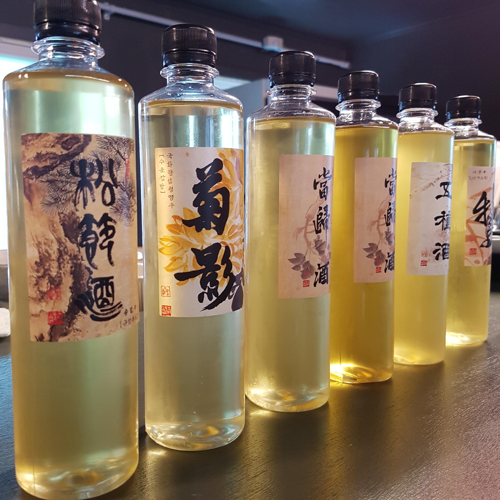

[정보] 복술복술 시음회 갔다오면서 질답한거 올려영
가성비만
2023.03.17 20:15:59
조회수 494



복술복술 찾아가실 분은 삼광모터스 옆 문짝을 잘 보시길...!!
매번 대표님이나 박사님 연구관님 양조사님 등등 볼때마다 느끼는 거지만
유투브에서 자주보던 분이 들어가자마자 반겨주셔서 너무나 감회가 깊어여
복술복술 팀의 남궁승쌤 원래 한약이었나 그쪽 전공도 하셔서 더 기대안고 갔는데
이 날 특집이 약용주 특집이었기 때문이져!
일단 마신거 얘기부터, 먼저 테이스팅 휠 들고갈껄 했네요ㅠㅠ
직관적인 향은 바로 기억이 나는데 아! 대추! 아! 당귀! 하는 향이 아닌? 향들은 적질 않으면 기억을 못하다 보니... 주품마다 질답도 했어용
질답 하고 커뮤니티 올린다고 했는데 보충설명 주신다고 글 확인도 해주셨음!!
송절주 - 규합총서
보은 송로주에서 느꼈던 소나무향(그냥 솔잎뜯어서 맡는거하고 또 다름)이 처음에 삭 들어오는데 입안에 들어가면 향미가 달라지면서 끝에 알싸함으로 끝났음 재료도 사실 좀 다르고 송로주는 증류주인데 어떻게 향이 비슷하지 하면서 첨에 놀람
- (계절마다 다름)겨울에 유자껍질을 달아 익히라 라고 주방문에 쓰여 있는데 술덧 위에 뿌리라는 뜻인가?
@ 유자껍질은 헤스페리딘 성분이 있어 쓴맛을 내는데 옛 사람들이 어떤 성분이 들었는지 까지는 생각치 못했겠지만 술에 닿으면 쓴맛을 낸다는 것을 경험을 통해 알았으리라 생각한다. 때문에 위에 메달아서 , 화향입주법이라 하는데 기름성분등 술덧자체에 들어가면 안좋은 향미를 낼 수 있는 부재료는 주머니 자루에 넣어서 위에 메달아 향을 입히는 방법을 썼다
국화주 - 수운잡방
보통? 국화향 나는 술들 먹으면 꼭 뒤쪽에 나는 경우가 많았음
이건 앞에서 부터 남ㅋㅋㅋㅋ 되게 신기했음ㅋㅋ
- 주방문에 생명주 자루를 쓰라 되어있는데 '생'이라 하는게 이해가 안갔다
@ 명주는 원래 삶아서 쓰게 되어있는데 안삶아도 된다는 뜻으로 쓰인것으로 보인다 국화도 화향입주법을 쓰기 때문에 자루가 술덧 안으로 들어가지 않아서 딱히 삶지 않아도 되었다
생당귀주, 건당귀주 - 주촌신방
본래 주품명은 당귀주인데 생으로 쓸지 건으로 쓸지 안쓰여있어서 둘 다 하셨데
와 근데 단양주인데 건당귀주 꽤나 달고 산미가 적어서 엄청 놀랐음 단양주는 보통 신데...??? 인기도 젤 많았고
당귀를 써서 한약방냄새냐? 그건 또 아닌거 같음 어려서 비염때문에 당귀만 죽어라 먹어서 지금은 당귀 싫어하게 되었음에도 향이 좋았음
- 주방문에 찹쌀 한말 찌고 흰 밀가루 내어 빚으라고 되어있었는데 밀가루는 계량이 없어서 뭔지 궁금했다
@ 밀가루 누룩을 쓴다는 뜻이다
오종주 - 규합총서
젤 맛있게 먹음 대추, 생강, 계피향부터 시작해서 잣향이 뒤에 들어오고 확실한 단맛이면서 고소하게 끝나니까 그냥 막 맛있음 향이 복합적이기도 하고
아황주 - 산가요록
시중 복원된 아황주 2단계 업그레이드 된 맛, 이거 좋아하시는 분도 계셨음
매운기가 뒤에 있긴 한데 전체적으로 달거나 시지 않고 밸런스 좋은
-------------------------------------------------------------------------------------------------------------------------------------------------------------------------------
요 밑은 궁금한거 질답이랑 배운거
- 문헌에 1:1죽, 1:2죽, 1:3죽 비율이 있는데 보통 5배수로 잡는걸 이렇게 해서 어떻게 만들어지는건지 궁금하다
@ 한자를 잘 봐야한다 범벅의 경우 상응하는 한자도 죽이었기 때문에 1대1이면 범벅이 맞다 물쓰는 방법도 잘 봐야 한다 끓이면서 하는 법, 끓는 물을 붓는 법 등 방법이 다르다
- 남궁승쌤 요즘 복각되는(복원이나 재현보단) 상업양조 술에 대해선 어떻게 생각하시는 바가 있으신가
@ 좋은 방향의 발전이다 원형을 알고 변형된 방법을 채용했다는 것은 좋은의미로 근거가 있기 때문에 문화적으로 가치가 있다고 생각한다.
- 공유하면서 마시기 때문에 더 의미있다는 요지의 말씀을 여러군데에서 하셨는데 코로나 이후 홈술문화에 대해서 생각하시는 바가 있을 것 같다
@ (이 부분은 따로 받은 답변 그대로 씀)
예전에 제가 전통주는 '공유하면서 마신다'는 표현을 한적이 있지요.
이는 우리 술문화를 혼자 즐기기 보다. 함께 향유하면서 그 시대의 감성과 문화를 공유하는것이 복술복술의 목적이자 활동 이유이기 때문이었습니다
지난 코로나로 인해 홈술문화가 널리 퍼졌습니다. 물론 함께 모여서 이야기할 수 없다는 것은 슬픈 일이지만 전통주에 대한 지속적인 관심과 유튜브 등 다양한 컨텐츠의 증가로 인해 혼술은 '취하려고 혼자 마시는 술'이 아닌 '나의 감정에 충실한 술', '좀 더 맛과 향에 조용히 집중할 수 있는 술'을 즐기는 문화가 되었습니다
이는 전반적인 술산업과 주류개발의 방향성을 제시했다는 점에서 전통주는 막걸리만 알아왔던 지난 시대에 비해 전화위복의 계기가 되었다고도 볼 수 있겠습니다
몇몇 주방문을 보면 '한 제 빚으려면' 이라는 표현으로 시작되는 레시피들이 있습니다 여기서 '한 제'는 우리가 '보약 한 제 지어먹어야지' 할때의 '한 제' 입니다.
'제(劑)'라는 단위는 한의학에서는 '10일분량의 약'을 뜻합니다. 약으로 쓰이는 술은 처방에 따른 '복용'의 대상이니 정해진 양을 먹어야 효과를 보았을테지요
- 되,홉 같은건 찾으면 보이는데 병, 복자단위를 모르겠다
@ (논문도 추천해주심) 되나 홉 또한 시대를 변하면서 단위가 조금씩 바뀌어 왔습니다. 잘 사용되지 않았던 복자도 역시 마찬가지 였습니다.
우리술 레시피의 단위를 이해하는 핵심은 '비율'입니다 조선 초기 산가요록은 복자를 '2되'라고 표현했습니다.
이하 질문 없이 배운거
송절(소나무 어린가지)은 물에 녹는 성분이 있고 알코올에 녹는 성분이 있다
송절주는 송절을 달인 다음에 그 물로 고두밥을 해서 술을 빚는데 이러면 두가지를 다 쓸 수 있다
추가 정보) 송절달인물로 고두밥(멥쌀)을 하고 → 다시 달여내고 남은 송절을 건져 다시 항아리 밑에 깐 뒤 → 그 위에 덧술을 얹어 술이 만들어짐과 동시에 송절 속 술에 녹는 성분을 추출해냈습니다
국화는 소금, 대추등 넣은 끓는 물에 2~3초 데치고 법제해서 사용한다
당귀의 데쿠르신 성분은 진피층에 '정유(精油) 성분' 또는 '지용성 성분'으로 잔가지에 많다
한약방 냄새의 주요인은 당귀와 천궁이다
같은 규합총서라도 궁중필사본, 민간필사본, 목판본 다 조금씩 다른데 오종주는 초기 수기본, 목판본에는 없고 1800년대 후반 규합총서 필사본에만 나온다
초기 과하주 복자단위가 조선초기~중기까진 크다가 후기때 확 작아진다
벽사문화라 해서 귀신을 쫒을때 잣을 썼는데 오종주의 경우에도 그런면이 있다 백자주도 잣을 썼고 술 고치는 법으로도 잣이 사용되었다
가성비만님
가입일 : 2022-07-29
관심회원 등록하기
- 방문횟수 : 1227
- 추천수 : 10
- 게시글 수 : 100
- 댓글 수 : 357
| 번호 | 제목 | 작성자 | 날짜 |
|---|
비밀번호 인증
글 작성시 설정한 비밀번호를 입력해 주세요.


열심히 읽었는데 분명 눈으로 다 읽었지만 뇌가 이해를 못하고 있습니다. 승쌤 요즘 활동 바운더리가 엄청 넓으신 것 같네요.
아주 심오한 내용들이네요..